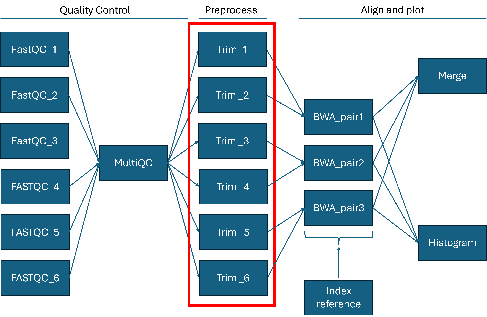

Introduction to workflows with gwf
https://hds-sandbox.github.io/GDKworkshops
Health Data Science sandbox, BiRC
GenomeDK, Health
2024-04-09
Short on Workflows and gwf
Workflow
Workflow and W. Management System
A workflow is a series of calculations and data manipulations which have to be performed in a specific sequence. A workflow management system organizes the workflow steps through defined dependencies, can assign different computing resources to each step, keeps a log of the workflow, interacts with a cluster’s queueing system.
A few terms
Each target of the workflow is submitted to a queueing manager so that it enters the queue and can be executed when possible.
Gwf
A lightweight and easy to adopt workflow manager. it requires knowing or learning Python. Some useful features:
- Defines target dependencies automatically using the input and output files of targets
- Only submits targets when their output files are not up to date
- Fire-and-forget: once you submit targets, you need not do more
- Has a few, simple and useful commands for following workflow execution and cleaning up intermediate data files
Check out the gwf webpage for updates, examples and more detailed documentation.
Exercise setup
Data and inspiration from this SW carpentry bioinformatics tutorial, which does not use pipelines.
Download examples and data
Examples and reference file
curl -L -o gwf_workshop.zip https://github.com/hds-sandbox/GDKworkshops/archive/main.zip \
&& unzip gwf_workshop.zip \
&& mv GDKworkshops-main/Examples/gwf gwf_workshop \
&& rm -rf GDKworkshops-main gwf_workshop.zipDownload fastq files
mkdir -p gwf_workshop/data
cd gwf_workshop/data/
curl -O ftp://ftp.sra.ebi.ac.uk/vol1/fastq/SRR258/004/SRR2589044/SRR2589044_1.fastq.gz
curl -O ftp://ftp.sra.ebi.ac.uk/vol1/fastq/SRR258/004/SRR2589044/SRR2589044_2.fastq.gz
curl -O ftp://ftp.sra.ebi.ac.uk/vol1/fastq/SRR258/003/SRR2584863/SRR2584863_1.fastq.gz
curl -O ftp://ftp.sra.ebi.ac.uk/vol1/fastq/SRR258/003/SRR2584863/SRR2584863_2.fastq.gz
curl -O ftp://ftp.sra.ebi.ac.uk/vol1/fastq/SRR258/006/SRR2584866/SRR2584866_1.fastq.gz
curl -O ftp://ftp.sra.ebi.ac.uk/vol1/fastq/SRR258/006/SRR2584866/SRR2584866_2.fastq.gz
cd ..Final file structure (run the tree command)
Install gwf
Using conda to create a new environment from the yml file:
You can see the package list with
A single target Workflow
The workflow file can be printed out with
Exit using q
You can easily spot all the elements of a workflow graph:
from gwf import Workflow
gwf = Workflow(defaults={'account': 'your_project'})
## A target doing FastQC on a file
gwf.target('FastQC',
cores=1,
memory='8gb',
walltime='00:05:00',
inputs=['data/SRR2584863_1.fastq.gz'],
outputs=['data/SRR2584863_1_fastqc.html',
'data/SRR2584863_1_fastqc.zip']) << """
fastqc data/SRR2584863_1.fastq.gz
"""Status and submission
We can see what is the status of each target - if it doesn’t see the output files (shouldrun), if the output is there (completed), if it is executing a target (running), or if it failed (‘failed’).
will show
You can submit the targets with
which reports you
Targets stdout and stderr
What are the commands in a target outputting? You can see stdout and stderr in the log of a target:
and
Parallel targets
Define independent targets which can run at the same time in the workflow
You can use python to automatically parsing names in a folder and creating targets:
#find .fastq.gz files in the data folder
pattern = os.path.join('data', '*.fastq.gz')
fastq_files = glob.glob(pattern)
#keep only the file name without the folder path
fastq_files = [os.path.basename(file) for file in fastq_files] #remove the path from the file
for FASTQ in fastq_files:
#name without extensions
FASTQ_BASENAME = FASTQ.split(".")[0]
#target with file-dependent name and inputs/outputs
gwf.target( f'FastQC_{FASTQ_BASENAME}',
cores=1,
memory='8gb',
walltime='00:05:00',
inputs=[f'data/{FASTQ}'],
outputs=[f'data/{FASTQ_BASENAME}_fastqc.html',
f'data/{FASTQ_BASENAME}_fastqc.zip']) << """
fastqc data/{FASTQ}
""".format(FASTQ=FASTQ)Useful gwf checks and debug
You can see the status with specific messages about the status of each target and what causes it.
At the end of the debug messages, you will see that one FastQC is already complete from the first example.
You can print explicitely some targets of your choice and their dependencies. For example all the targets related to the first element of the fastq pairs:
Giving no names will print all the targets
Try to run the whole workflow and follow its status with watch.
and
Targets will run independently and might run at the same time.
See specifically what gwf states about your targets: why a target should run, why not?
Tip
When developing a workflow, take your time to use status and info once you add new targets.
Multiple target dependencies
A single target (MultiQC) is dependent on the execution of multiple targets (FastQC of the data files)
#names without path and extensions
fastq_basenames = [ FASTQ.split(".")[0] for FASTQ in fastq_files ]
gwf.target( 'MultiQC', #name of the target
cores=1,
memory='8gb',
walltime='00:05:00',
inputs= {'ZIP': [f'data/{FASTQ_BASENAME}_fastqc.zip' for FASTQ_BASENAME in fastq_basenames],
'REPORTS': [f'data/{FASTQ_BASENAME}_fastqc.html' for FASTQ_BASENAME in fastq_basenames] },
outputs=['results/multiqc_output/multiqc_report.html'],
protect=['results/multiqc_output/multiqc_report.html']) << """
mkdir -p results/multiqc_output
multiqc --outdir results/multiqc_output \
data/
"""protected outputs and cleaning
The workflow parameter
prevents you from deleting the specified file when using clean. The clean command removes all intermediate outputs of a workflow (not essential for the result report and which can be replicated by rerunning the workflow).
Endpoints’ files are protected
Files generated by endpoints (targets which are not dependencies of others, i.e. at the end of the workflow) do not get deleted. clean --all removes any file in the workflow.
status with filters
We know all FastQC targets are completed. Run first the workflow
Are you waiting for many endpoints? Look only for the completed ones with the status filter:
(You can also use the status running, shouldrun or failed).
Exercise 1
Parallel targets dependent on MultiQC produce trimmed fastq files.
Tasks-questions
Consider the workflow file WF04_trimming.py:
- apply
gwf statusto watch the endpoints of the workflow - Which is the file dependency common to all trim targets?
- run the workflow and…
- …apply
watch gwf statusand follow only therunningtargets - Look at the
stderrprintout of one trimming target
Code
fastq_pairs = np.unique([ FASTQ.split('_')[0] for FASTQ in fastq_basenames ]) #names without pair number and extension
for FASTQ_PAIR in fastq_pairs:
gwf.target( f"Trimmomatic_{FASTQ_PAIR}", #name of the target
cores=8,
memory='8gb',
walltime='00:10:00',
inputs= {'ADAPTERS': ['fasta/NexteraPE-PE.fa'],
'FASTQS': [f'data/{FASTQ_PAIR}_1.fastq.gz',
f'data/{FASTQ_PAIR}_2.fastq.gz'],
'MULTIQC': ['results/multiqc_output/multiqc_report.html']},
outputs=[f'data_trim/{FASTQ_PAIR}_1.trim.fastq.gz',
f'data_trim/{FASTQ_PAIR}_1un.trim.fastq.gz',
f'data_trim/{FASTQ_PAIR}_2.trim.fastq.gz',
f'data_trim/{FASTQ_PAIR}_2un.trim.fastq.gz']) << """
mkdir -p data_trim
trimmomatic PE -threads 8 \
data/{FASTQ_PAIR}_1.fastq.gz data/{FASTQ_PAIR}_2.fastq.gz \
data_trim/{FASTQ_PAIR}_1.trim.fastq.gz data_trim/{FASTQ_PAIR}_1un.trim.fastq.gz \
data_trim/{FASTQ_PAIR}_2.trim.fastq.gz data_trim/{FASTQ_PAIR}_2un.trim.fastq.gz \
SLIDINGWINDOW:4:20 MINLEN:25 ILLUMINACLIP:{ADAPTERFILE}:2:40:15
""".format(FASTQ_PAIR=FASTQ_PAIR, ADAPTERFILE='fasta/NexteraPE-PE.fa')Answers
1. apply gwf status to watch the endpoints of the workflow
gives
2. Which is the file dependency common to all trim targets?
Each endpoint needs an adapter fasta file apart from the raw data files in input. You can look at the file dependencies using
3. run the workflow 4. use watch gwf status and follow only the running targets
After running the targets, for example with
you can follow the running targets with
If the targets are currently running and neither shouldrun, completed nor failed, you should see something like this,
after which the targets will be completed (and disappear from your view with the status filter).
5. Look at the stderr printout of one trimming target
You can see the stderr f a trimming job, for example, by
Exercise 2
Parallel targets (BWA), each dependent on a pair of trimming targets, produce alignments of parts of the whole genome using an indexing of the reference (Index reference). Those alignment are then merged (Merge) and a depth histogram is also produced for each subgenome (Histogram).
Tasks-questions
Consider the workflow file WF05_align_merge_plot.py:
- use
statusto see which are the endpoint targets, then find their target dependencies - do you need to protect the final merged alignment in the target
BAM_merge? - can the targets
BAM_mergeandHistogramrun at the same time? - A pair of fastq files is twice as large than the other two. If instead of aligning data in parallel targets you were to align pairs one at a time in the same target, how much more time would it take? (assuming parallel targets start running at the same time)
- Run the workflow and
watchthestatusof the targets. You should see the running targets following the order of the dependencies. You should also find the pdf plot in theresultsfolder.
Code
for FASTQ_PAIR in fastq_pairs:
gwf.target( f"BWA_mem_{FASTQ_PAIR}", #name of the target
cores=8,
memory='16gb',
walltime='00:15:00',
inputs= {'INDEXING': [ 'fasta/ecoli_rel606.fasta.'+ extension for extension in ['amb','ann','bwt','pac','sa'] ],
'FASTQS': [f'data_trim/{FASTQ_PAIR}_1.trim.fastq.gz',
f'data_trim/{FASTQ_PAIR}_2.trim.fastq.gz']},
outputs=[f'results/alignments/{FASTQ_PAIR}.sort.bam',
f'results/depths/{FASTQ_PAIR}.depth','results/depths/hellosamtools.txt' ]) << """
mkdir -p results/alignments
bwa mem -t 8 fasta/ecoli_rel606.fasta \
data_trim/{FASTQ_PAIR}_1.trim.fastq.gz \
data_trim/{FASTQ_PAIR}_2.trim.fastq.gz > \
results/alignments/{FASTQ_PAIR}.sam
samtools view -S -b results/alignments/{FASTQ_PAIR}.sam > results/alignments/{FASTQ_PAIR}.bam
samtools sort -o results/alignments/{FASTQ_PAIR}.sort.bam results/alignments/{FASTQ_PAIR}.bam
### print depths in text file
mkdir -p results/depths
samtools index results/alignments/{FASTQ_PAIR}.sort.bam
samtools depth results/alignments/{FASTQ_PAIR}.sort.bam > results/depths/{FASTQ_PAIR}.depth && touch hellosamtools.txt
""".format(FASTQ_PAIR=FASTQ_PAIR)
gwf.target( "BAM_merge", #name of the target
cores=1,
memory='8gb',
walltime='00:10:00',
inputs= [f'results/alignments/{FASTQ_PAIR}.sort.bam' for FASTQ_PAIR in fastq_pairs],
outputs=['results/alignments/merged.bam']) << """
samtools merge -f results/alignments/merged.bam results/alignments/*.sort.bam
samtools sort results/alignments/merged.bam -o results/alignments/merged.final.bam
"""
gwf.target( "Histogram", #name of the target
cores=1,
memory='8gb',
walltime='00:10:00',
inputs= [f'results/depths/{FASTQ_PAIR}.depth' for FASTQ_PAIR in fastq_pairs],
outputs=[ 'results/depths/histogram.pdf' ]) << """
Rscript plotscript.R
"""Answers
1. use status to see which are the endpoint targets, then find their target dependencies
There are two endpoints: one for merging aligned files and one for plotting a histogram. Use
to obtain
Use the info command to see their file dependencies:
Look at the output to find out that Histogram and BAM_merge depend both on the following targets
Note though that they depend on different files from those targets!
2. do you need to protect the final merged alignment in the target BAM_merge?
BAM_merge is an endpoint target, so its files do not need to be protected in case you want to do a cleanup with gwf clean. You can clean all files anyway with gwf clean --all.
3. can the targets BAM_merge and Histogram run at the same time?
Yes, as soon as the raw data files have been aligned separately.
4. A pair of fastq files is twice as large than the other two. If instead of aligning data in parallel targets you were to align pairs one at a time in the same target, how much more time would it take? (assuming parallel targets start running at the same time)
If you run a single target with the alignment of all pairs, it will take twice the time compared to running parallel targets.
When you run parallel targets, the time needed to finish the alignments is the time needed for the largest pair (which is twice the size of the others).
When you run sequentially the alignments, it takes the sum of all alignment times to get done.
Clean up after yourself
Use the tree command to look at how many files you created!
What is the size of each folder and their total size?
We have 8.3GB of data
Try to use
accept the warning message and note how, already for a small exercise, you are going to cleanup a lot.
Now you have a more slim folder, which contains workflows, raw data, a merged quality report, aligned data and depth histogram in .pdf.
All the other files can be recreated at any moment if necessary.
Tip
Remember: Computation cost << Storage cost
Last tips
Using a separate conda environment in a target
You might have a conda environment with a specific version of the package gwf, and then another environment with relevant packages, called for example tools_environment.
For example:
from gwf import Workflow
gwf = Workflow(defaults={'account': 'your_project'})
## A target doing FastQC on a file
gwf.target('FastQC',
cores=1,
memory='8gb',
walltime='00:05:00',
inputs=['data/SRR2584863_1.fastq.gz'],
outputs=['data/SRR2584863_1_fastqc.html',
'data/SRR2584863_1_fastqc.zip']) << """
eval "$(conda shell.bash hook)"
conda activate tools_environment
fastqc data/SRR2584863_1.fastq.gz
"""Use templates
You can define templates in your workflow, or in a separate file called for example templates.py. A template for the FastQC target could be
def fastqc(input="", cores=1, memory='8gb', walltime='00:05:00'):
"""A template for fastqc"""
inputs = [f'{input}.fastq.gz']
outputs = [f'{input}_fastqc.zip',f'{input}_fastqc.html']
options = {
'cores': cores,
'memory': memory,
'walltime': walltime
}
spec = '''
fastqc {input}
'''.format(input=inputs[0])
return AnonymousTarget(inputs=inputs, outputs=outputs, options=options, spec=spec)the workflow file contains now import to import the template, and uses it afterwards to define a target:
Add new files after running a workflow
If you add new data files and your workflow reads which files there are automatically, creating corresponding targets, then adding new files will update your workflow with new targets to be executed.
Example: adding new fastq.gz files in the data folder of this workshop will update the workflow adding new steps and rendering others from completed to shouldrun.